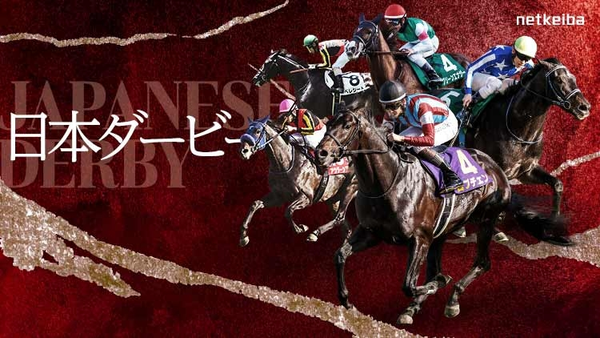

El fin de semana turf: Japanese Derby, Prix du Jockey Club y GP Beamonte
El calendario internacional concentra este fin de semana tres carreras clásicas para la generación de tres años. El Tokyo Yushun (Japanese Derby) vuelve a Tokio el domingo 31 de mayo como gran cita global, con el Qatar Prix du Jockey Club de Chantilly y el Gran Premio Beamonte de La Zarzuela completando…

Foto: en.netkeiba.com
El calendario internacional concentra este fin de semana tres carreras clásicas para la generación de tres años. El Tokyo Yushun (Japanese Derby) vuelve a Tokio el domingo 31 de mayo como gran cita global, con el Qatar Prix du Jockey Club de Chantilly y el Gran Premio Beamonte de La Zarzuela completando un cartel que arranca el sábado y se extiende hasta la madrugada en Japón.
La jornada dominical en el Tokyo Racecourse está marcada por el Japanese Derby, segunda jornada de la Triple Corona japonesa y carrera de Grupo I sobre 2.400 metros en césped reservada a potros de tres años. La prueba se considera el objetivo deportivo y comercial más relevante del calendario nipón y reúne a los mejores ejemplares de la generación tras el Satsuki Sho. La misma reunión incorpora el Meguro Kinen, Grupo II sobre 2.500 metros también en césped, una distancia clásica que prepara terreno para los maratonianos del verano japonés. El sábado, el Aoi Stakes (Grupo III, 1.200 metros) abre la fiesta con un sprint para tres años.
En Europa, Chantilly disputa el Qatar Prix du Jockey Club, el llamado "Derby francés", también el domingo. La prueba sobre 2.100 metros en césped es uno de los pilares de la temporada clásica europea y su nómina suele anticipar nombres con proyección para el otoño en ParisLongchamp. El sábado, en España, La Zarzuela afronta la decimosexta jornada de su temporada de primavera con el Gran Premio Beamonte como prueba estelar: diez potras de tres años se han inscrito para esta clásica nacional, según confirmó esta misma semana el Hipódromo de la Zarzuela.
Con todo, el fin de semana ofrece un mapa coherente para el aficionado: Tokio marca la cita global, Chantilly mantiene el peso del clasicismo europeo y La Zarzuela cierra el ángulo doméstico. Tres pistas, tres recorridos y la misma generación de tres años en el centro de la escena.
— Redacción de Galope al Día